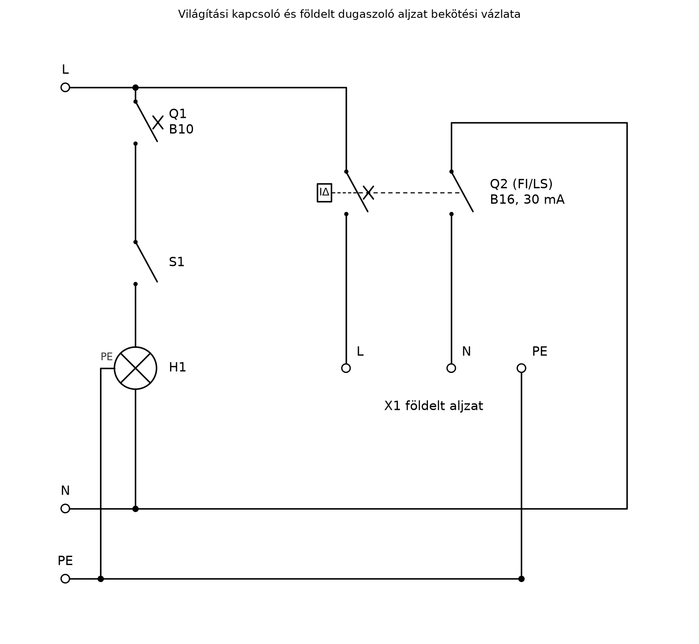
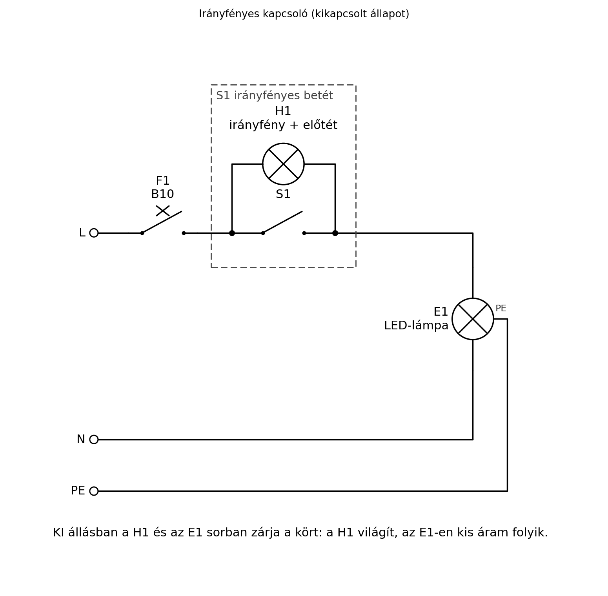
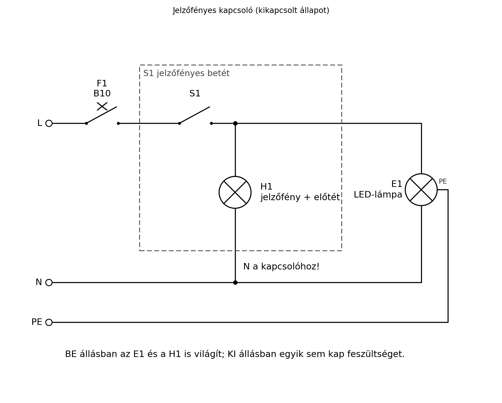
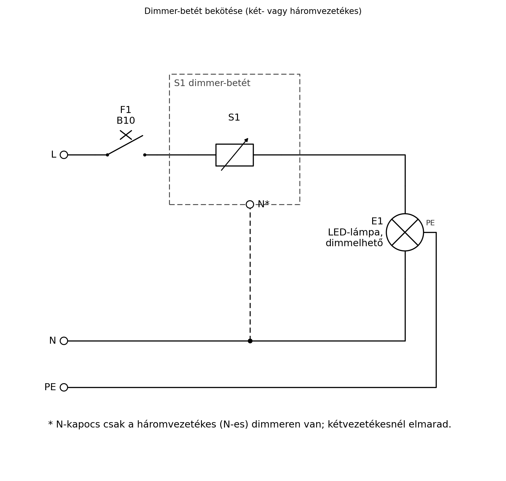
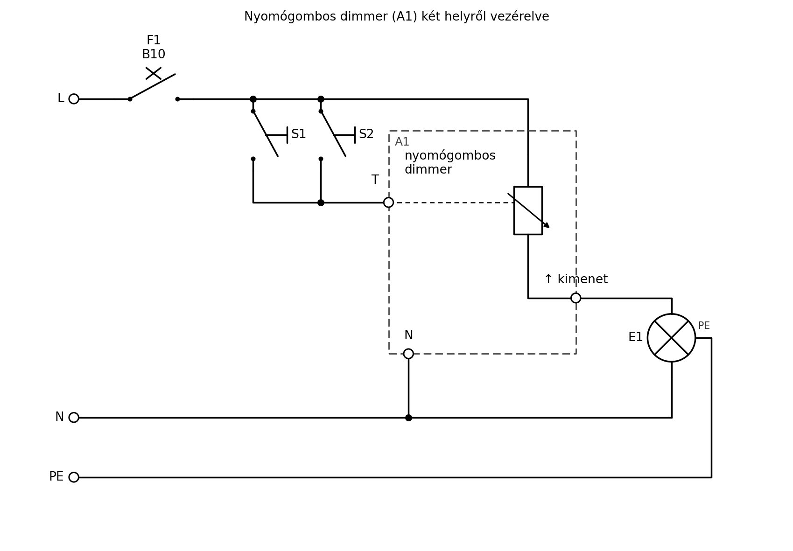
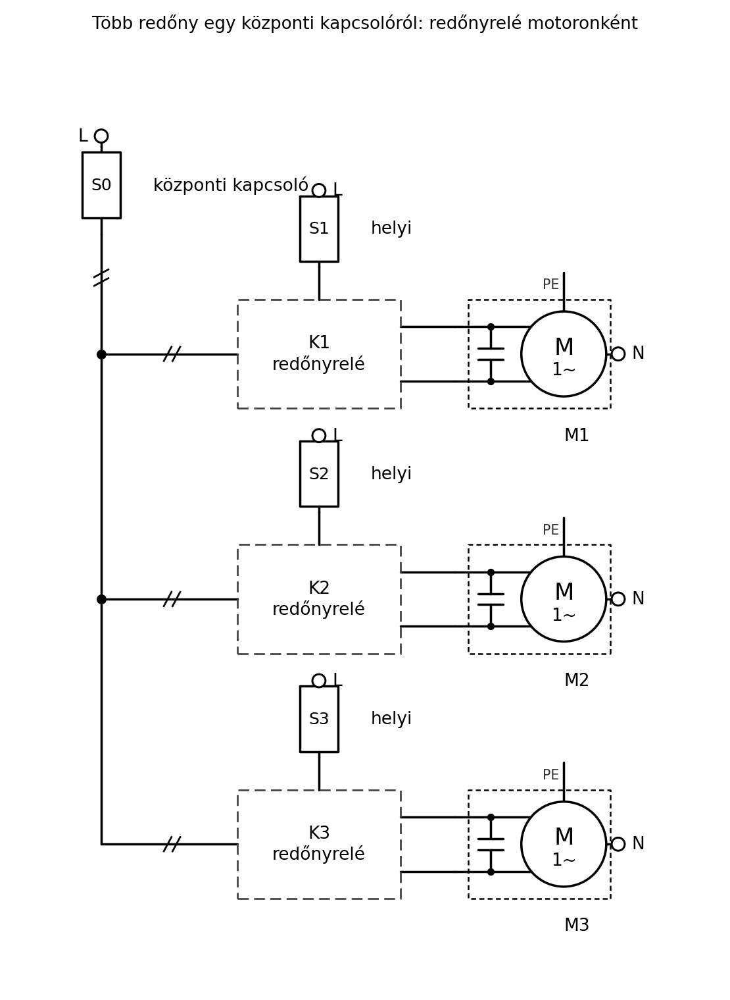

Statikus változat (mint a PDF-ben)
Képzeld el, hogy egy lakásfelújításnál a kivitelező elkészült a falvéséssel és a vezetékek behúzásával. A megrendelő most már látni akarja a kapcsolókat és a konnektorokat. Te megérkezel a dobos papírdobozokkal. Ha rossz szerelvényt választasz, vagy rosszul kötöd be, az nemcsak bosszúságot okoz, hanem életveszélyes is lehet. Ez a fejezet azért fontos, mert itt találkozik a villanyszerelő munkája a felhasználóval: a rosszul bekötött vagy alulméretezett szerelvény tüzet okozhat, az elmaradt védővezető pedig áramütést.
A fejezet célja, hogy magabiztosan meg tudd különböztetni a kapcsoló, a váltókapcsoló és a keresztkapcsoló belső felépítését, ismerd a földelt dugaszoló aljzatok jelöléseit, és a szerelvényt biztonságosan, a gyártó adatlapja szerinti csavarnyomatékkal tudd rákötni a hálózatra.
Egy egyszerű lakásáramkörben a fázist mindig a kapcsoló szakítja meg, a nulla és a védővezető pedig általában a kötődobozban halad tovább. A földelt dugaszoló aljzatnál mind a három vezető (fázis, nulla, védővezető) közvetlenül csatlakozik.

Az ábrán látod: a Q1 kismegszakítóról kiinduló barna fázisvezeték belemegy az S1 kapcsolóba, majd a kapcsoló kimenetéről a H1 lámpához, onnan pedig vissza a kék nullavezetőre; a lámpatest PE kapcsa a zöld-sárga védővezetőre csatlakozik. Az aljzatkört a Q2 áramvédő kismegszakító (FI/LS, B16, 30 mA) védi: a fázis és a nulla is ennek egy-egy pólusán át jut az X1 aljzat L, illetve N kapcsára, a zöld-sárga védővezető pedig megszakítás nélkül a PE kapocsra (a szaggatott vonal a két pólus közös működtetését jelzi). A három vezető (L, N, PE) sehol nincs összekötve; a keresztező vonalak csatlakozási pont nélkül nem érintkeznek.
Definíció. A kapcsoló (kapcsolókészülék a szerelvény értelmében) olyan kézzel működtetett szerelvény, amely egy áramkört (általában a fázisvezetőt) szakít meg vagy zár be. A magyar és európai háztartási gyakorlatban a világítási kapcsoló névleges árama általában 6 A vagy 10 A.
Definíció. A váltókapcsoló (angolul: two-way switch) egy bemeneti és két kimeneti kapoccsal rendelkező kapcsoló. Ez nem „ki-be” kapcsoló, hanem átváltó: a közös pontját (a gyártók általában „L” vagy nyíllal jelölik) hol az egyik, hol a másik kimenetére köti. Ezzel két helyről lehet ugyanazt a lámpát vezérelni.
Definíció. A keresztkapcsoló (angolul: intermediate switch) két váltókapcsoló közé iktatott, négy kivezetésű szerelvény. Megcseréli a rajta átfutó két „váltóvezetéket”. Ha kettőnél több (három, négy stb.) helyről akarsz kapcsolni, a két szélső váltókapcsoló közé annyi keresztkapcsolót teszel, ahány közbenső kapcsolási pontra szükség van.
Definíció. A földelt dugaszoló aljzat olyan csatlakozó szerelvény, amely a fázis- és nullavezetőn kívül védővezető (PE) csatlakoztatására alkalmas érintkezővel is rendelkezik. A háztartási aljzatok szabványos névleges árama Magyarországon 16 A, névleges feszültsége 230 V. A hazai fogyasztói dugaszoló rendszerben a védőérintkezős kivitel a meghatározó (CEE 7/3 típusú aljzat, köznyelven „földelt (schuko) aljzat” – ellenőrizendő: az aktuális hazai gyakorlat szerinti típusjel). A 230 V-os áramkörbe ilyen, védővezetős aljzatot szerelünk.
A földelt aljzat felépítését az alábbi ábra elölről és hátulról mutatja. Elölről látszik a szerelőkeret (1), a süllyesztett, kerek dugóház (2), a két érintkezőhüvely nyílása (3), a dugóház falán fent és lent a két védőérintkező rugó (4), valamint – ha a típusban van – a gyermekvédő zár (5). Hátulról az L és az N kapocs, középen a PE kapocs látható; ez egy fém híddal mindkét védőérintkező rugóhoz kapcsolódik.
A védőérintkezők a dugóház peremén ülnek, ezért dugaszoláskor a dugó földelő érintkezője előbb csatlakozik, mint a két csap a hüvelyekhez, kihúzáskor pedig utolsóként válik el. Ez csak akkor véd, ha a PE kapocs be van kötve. A HTML-kiadásban az egyes részekre mutatva a szerepük is megjelenik.
A szerelvényeken a gyártó feltünteti: - a névleges feszültséget (pl. 250 V~), - a névleges áramot (pl. 10 AX, 16 A), - a védettségi fokot (pl. IP20), - a kapcsolási sémát (különösen váltó- és keresztkapcsolónál, piktogrammal).
Az egypólusú, a váltó- és a keresztkapcsoló csak a szerelvénycsalád alapja. Az alábbiakkal naponta találkozol, és LED-es világításnál ezekből lesz a legtöbb reklamáció.
| Szerelvény | Kapcsok | N kell? | Jellemző felhasználás | Buktató |
|---|---|---|---|---|
| Csillárkapcsoló | L, ↑1, ↑2 | nem | két lámpacsoport | ↑1 és ↑2 felcserélve |
| Kétpólusú | L, N, L↑, N↑ | igen | nedves hely, gépek | N kimenet a közös N-re kötve |
| Jelzőfényes | L, ↑, N | igen | pince, bojler | N hiányzik a dobozban |
| Irányfényes | L, ↑ | nem | folyosó, háló | LED dereng |
| Nyomógomb | L, ↑ | nem | csengő, relé, automata | kapcsolónak nézik |
| Megvilágított nyomógomb | L, ↑ (N) | típusfüggő | lépcsőház | 3 vezetékesnél jelzőfény-áram |
| Redőnykapcsoló | L, fel, le | nem | redőnymotor | több motor párhuzamosan |
| Dimmer | L, ↑ (N) | típusfüggő | fényerő | nem szabályozható LED, minimum |
| Elektronikus kapcsoló | L, N, ↑ vagy L, ↑ | többnyire | érzékelő, okosotthon | kis terhelésen villogás |
| USB-töltős aljzat | L, N, PE | igen | telefontöltés | mély doboz kell |
Szabály. Fázist mindig a kapcsoló, ne a nulla vezetőt szakítsa meg. Ennek oka: ha kikapcsolt lámpánál cserélsz izzót, a lámpafoglalat ne legyen fázisfeszültségen. Ha a nullát szakítanád meg, a fázis kikapcsolt állapotban is ott lenne a foglalatban.
A kapcsoló bekötésekor az áramkör fázisvezetője a kapcsoló bemenetére, a kapcsolt fázis (gyakran „kapcsolt szál” vagy „visszatérő”) pedig a kapcsoló kimenetére kerül. A nulla és a védővezető a kötődobozban vagy a szerelvény mögött halad tovább; az egyszerű (mechanikus) világítási kapcsolónak nincs N-kapcsa, ezért a nullát nem a kapcsolóhoz kell vinni.
Egy süllyesztett kapcsoló alkatrészeit az alábbi robbantott ábra mutatja a falban ülő dobozzal együtt. A süllyesztett dobozba (1) a kapcsolóbetét kerül: hátoldalán vannak a kapcsok (2), a betét (3) tartalmazza az érintkezőket, a terpesztőkörmök (4) a doboz falába feszülnek, a fém tartókeretet (5) a dobozcsavarok (6) rögzítik a doboz füleihez. Erre jön a takarókeret (7) és a billentyű (8).
A sorrend a szerelés sorrendje is: előbb a betétet kötöd be és rögzíted a dobozban, a tartókeretet vízszintbe állítod, és csak a bekötés ellenőrzése után teszed fel a keretet és a billentyűt. A dobozcsavarokat ne húzd túl, mert a tartókeret elhajlik, és a keret nem simul a falra. A HTML-kiadásban a részekre mutatva a szerepük is olvasható.
A váltókapcsolónak három kapcsa van: - egy közös kapocs (általában L), - két váltókapocs (általában 1 és 2, vagy két nyíl jelöli).
A keresztkapcsolónak négy kapcsa van, amelyeket a gyártók gyakran páronként jelölnek (pl. 1/1’ és 2/2’ vagy nyilakkal). A rajzjelet a Kapcsolók és mágneskapcsolók rajzjelei, kapocsjelölések alfejezetben ismered meg részletesen.
A három kapcsolóbetét hátoldalát az alábbi ábra veti össze. Ránézésre a kapcsok száma (kettő, három, négy) különbözteti meg őket, a kapocsjelölés és a betétre nyomtatott piktogram pedig megmondja, melyik kapocsra mi kerül. A betéten olvasható a névleges feszültség és áram (pl. 250 V~, 10 AX, ahol az X az induktív, illetve fénycsöves terhelésre is alkalmas kivitelt jelzi), az IP-jel és a csupaszolási sablon.
A jelölés gyártónként eltér (betű, szám vagy nyíl), ezért bekötés előtt mindig a konkrét betét jelölését és adatlapját nézd meg. A váltókapcsoló L kapcsa a közös pont: az egyik váltónál ide jön a bejövő fázis, a másiknál innen indul a kapcsolt szál a lámpához. A HTML-kiadásban a kapcsokra mutatva a bekötésük is megjelenik.
Az egypólusú, váltó- és keresztbetéten kívül a lakásokban még nyolc betétfajtával találkozol. Az alábbi tabló ugyanabban a nézetben mutatja őket: a kapcsok számából és jelöléséből, valamint a betét alatti „N kell?” sorból azonnal látszik, hogy melyik betéthez kell nullavezetőt vinni a szerelvénydobozba.
Ellenőrizd magad: melyik három betéthez kell mindenképpen N a dobozban (kétpólusú, jelzőfényes, N-kapcsos megvilágított nyomógomb), és melyiknél dönt a típus (dimmer)? A csillagos megvilágított nyomógombnak kétkapcsos kivitele is van: annak fénye – az irányfényes kapcsolóhoz hasonlóan – a terhelésen át záródik. A jelzőfényes, irányfényes, dimmer- és redőnybetét bekötését a lenti pontok rajzai mutatják. A HTML-kiadásban a kapcsokra mutatva megjelenik, melyik ér (barna, fekete/szürke, világoskék) kerül rájuk.
Szabvány. A háztartási és hasonló jellegű rögzített villamos szereléshez használt kapcsolókra vonatkozó termékszabvány az MSZ EN 60669-1. A dugaszoló aljzatokra az MSZ EN 60884-1 vonatkozik (ellenőrizendő: az aktuális szabványkiadás száma és címe). A szerelvény kiválasztását a létesítési szabvány, az MSZ HD 60364 sorozat követelményeihez kell illeszteni. A gyártói adatlap a bekötési nyomatékot és a vezeték-keresztmetszet tartományt adja meg; a te feladatod, hogy az adott szerelvényhez tartozó adatlapot elolvasd.
Összefüggés. A szerelvény kapcsainak csavarnyomatékát mindig tartsd be. Ha túl kicsi a nyomaték, a vezeték nincs szilárdan rögzítve, meglazulhat, és a rossz érintkezés melegedést, ívet, akár tüzet okozhat. Ha túl nagy, a kapocs menete elszakadhat, a csavar elnyíródhat, vagy a több eres vezeték elvékonyodhat. A tipikus lakásszerelvény kapcsainál a gyártók általában 0,4–0,8 Nm közötti nyomatékot adnak meg (ellenőrizendő: a konkrét szerelvény gyártói adatlapja). Ezért fontos a nyomatékcsavarhúzó vagy legalább a szerelői gyakorlat alapján jól beállított csavarhúzó.
A tömör (H07V-U) és a merev sodrott (H07V-R) vezetőt közvetlenül, a finom sodratú hajlékony vezetőt (például H05V-K, H07V-K) érvéghüvellyel kötjük be, ha a kapocs gyártója nem engedi másképp. Finom sodratú vezetőt érvéghüvely nélkül csavaros kapocsba szorítani tilos, mert a csavar elnyírja az egyes ereket, a kapocs meglazul, és a vezeték kicsúszik (a pontos vezetékmegmunkálást lásd a Munkahely, szerszám, vezetékmegmunkálás, érvéghüvely és kábelsaru alfejezetben).
A csatlakoztatáshoz a szerelvény hátoldalán lévő kapcsokat figyelmesen meg kell nézni. A hagyományos csavaros kapocsnál a csavart teljesen ki kell lazítani, a vezetéket a csavar és a kapocslemez közé, a kapocslemez alá kell vezetni, majd a megfelelő nyomatékkal meghúzni. A rugós (szorítós) kapocsnál a rugót nyomólemezzel vagy csavarhúzóval ki kell nyitni, a vezetéket be kell tolni, majd a rugót vissza kell engedni. A rugós kapocs általában egyforma erőt fejt ki, de csak a megadott keresztmetszet-tartományban, ezért az 1,5 mm²-es és a 2,5 mm²-es vezeték bekötésekor figyelni kell a gyártó jelölésére.
Az alábbi metszetek a három gyakori kapocshelyzetet helyes/hibás párban mutatják. Csavaros kapocsnál a csupasz ér teljes hosszában a kapocslemez alatt van, a szigetelés a kapocsig ér; ha túl hosszú a csupasz rész, az kilóg, és érintés- vagy zárlatveszélyt okoz. Rugós kapocsnál az eret ütközésig toljuk; ha túl rövid a csupaszolás, a rugó a szigetelést szorítja. Finom sodratú érnél az érvéghüvely tartja egyben a szálakat; nélküle a csavar szétnyomja és elnyírja őket.
Bekötés után minden eret húzd meg kézzel (húzópróba), és nézd meg, nem látszik-e csupasz rész a kapocs előtt. A HTML-kiadásban a helyes és a hibás sor külön is megjeleníthető.
Szabály. A szerelvény mögötti kötődobozban a védővezetőt (PE) és a nullavezetőt (N) rendszerint tovább kell kötni. A fázisvezetőt a kapcsolóhoz kell vezetni, a kapcsolt fázist pedig vissza a lámpához. A lámpa nulláját a kötődobozban a tápláló kör nullájához kötjük. (Nullavezetőt csak az elektronikus kapcsoló – mozgásérzékelő, elektronikus dimmer, okoskapcsoló – igényel, ha a gyártó előírja; az egyszerű mechanikus kapcsolónak nincs N-kapcsa.) Ha több fogyasztói áramkört szerelsz, soha ne vonj össze két különböző kismegszakítóról táplált nullavezetőt, mert az áram-védőkapcsolós (FI) védelemnél vándoráramot okoz.
A két leggyakoribb világító kapcsolóbetét kívülről alig különbözik, a belsejük viszont egészen más. Az irányfényes (régies nevén glimmes vagy „sötétben megtalálható”) kapcsoló kikapcsolt állapotban világít, hogy sötétben is megtaláld; a jelzőfényes (ellenőrzőlámpás) kapcsoló bekapcsolt állapotban világít, és azt jelzi, hogy a máshonnan nem látható fogyasztó (pincelámpa, bojler, kültéri világítás) be van kapcsolva. Az alábbi két rajz azonos elrendezésben, kikapcsolt állapotban mutatja őket (L felül, N alul, PE külön; a lámpa E1, a betétbe épített jelzőfény H1).
Figyelem – a „glimm” két külön dolog. A „glimmes” (irányfényes) kapcsoló jelzőfénye csak tájékozódásra való; a glimmlámpás fázisceruza egypólusú feszültségjelző, amellyel a feszültségmentességet megállapítani tilos (lásd a feladatgyűjteménybeli (16.1) gyakorlati útmutatóját). Egyik fény hiánya sem bizonyítja, hogy a kör feszültségmentes.


Hasonlítsd össze a két rajzon a H1 helyét. Az irányfényes betétben a H1 az S1 érintkezővel párhuzamos: KI állásban az áramköre az E1 lámpán át záródik, ezért a betéthez nem kell N. A jelzőfényes betétben a H1 a kapcsolt szál és az N között van, az E1-gyel párhuzamosan: ehhez a kapcsolódobozba N vezetéket kell vinni – ha nincs ott N, a jelzőfényes betét nem köthető be szabályosan.
Miért dereng a kikapcsolt LED-lámpa? (1) Az irányfény árama tájékoztatóan 0,5–1 mA nagyságrendű (ellenőrizendő: a betét gyártói adata). Izzólámpánál ez semmi, a szál nem izzik fel. Egy 5 W-os LED-lámpa meghajtójának bemeneti kondenzátorát viszont ez a kis áram lassan feltölti, és amikor a feszültsége eléri a meghajtó indulási küszöbét, a lámpa felvillan, majd kialszik – kikapcsolt állapotban dereng vagy néhány másodpercenként felvillan. (2) Megoldás: N-kapcsos irányfényes betét (a jelzőfény az N-ről kap tápot, nem a lámpán át), a jelzőfény kiiktatása (a gyártó által engedett módon, vagy fény nélküli betét), illetve a lámpatest gyártója által engedett kompenzáló elem (alapterhelés-kondenzátor) a lámpa kapcsain. (3) Ugyanez a jelenség jelentkezik a megvilágított nyomógomboknál a háromvezetékes lépcsőházi bekötésnél (lásd a lépcsőházi automatáról szóló részt).
Hibakeresési szabály: ha a kikapcsolt LED-lámpa dereng, előbb a kapcsoló típusát nézd meg (irányfényes-e), csak utána keress szivárgást vagy szigetelési hibát. Az elektronikai magyarázatot az Erősáramú félvezetők: tirisztor, triac, IGBT, MOSFET alfejezet, a kapacitív csatolású és N-oldali kapcsolási hibát a Világítási áramkörök építése: egypólusú, váltó, kereszt alfejezet viszi tovább.
A fényerő-szabályozó (dimmer) a hálózati szinusz minden félperiódusából csak egy részt enged a lámpára (fázishasítás): a felfutó élű dimmer a félperiódus elején, a lefutó élű a végén vág le egy szakaszt. A felfutó élű (jelölése általában L vagy R,L) induktív terheléshez (vasmagos transzformátor) való, a lefutó élű (C vagy R,C) kapacitív jellegű terheléshez (elektronikus transzformátor, LED-meghajtó). A kapcsolóelemek (triak, MOSFET) elektronikai magyarázatát a teljesítményelektronikai fejezet adja; itt a szerelői döntés a lényeg. Az alábbi ábra mindkét jelalakot 90°-os vágásnál mutatja.
Figyeld meg, hogy 90°-nál mindkét fajta a teljesítmény felét adja ohmos terhelésen, csak a vágás helye más: a felfutó élű dimmer hirtelen kapcsol be a szinusz csúcsán (meredek áramfelfutás – kapacitív terhelésen áramlökés, zúgás), a lefutó élű a csúcson kapcsol ki (induktív terhelésen feszültséglökés). A HTML-kiadásban a vágási szög és a fajta állítható, és a lap kiírja a relatív teljesítményt.
| Fényforrás / terhelés | Megfelelő dimmer | Megjegyzés |
|---|---|---|
| izzólámpa, 230 V-os halogénlámpa | felfutó vagy lefutó élű (mindkettő) | ohmos terhelés |
| törpefeszültségű halogén vasmagos transzformátorral | felfutó élű (L) | induktív terhelés |
| törpefeszültségű halogén elektronikus transzformátorral | lefutó élű (C) | kapacitív jellegű terhelés |
| dimmelhető LED-lámpa (230 V) | lefutó élű vagy „LED” jelű univerzális, a lámpa gyártójának listája szerint | a minimális terhelést ellenőrizni kell |
| nem dimmelhető LED-lámpa, kompakt fénycső | nem szabályozható – dimmerre kötni tilos | a meghajtó károsodik, villog |
A dimmer adattábláján a megengedett terhelés fényforrás-típusonként szerepel (pl. izzóra 300 W, LED-re 5–100 W). LED-terhelésnél tájékoztató ökölszabály, hogy a dimmer izzóra megadott teljesítményét tízszeresen le kell értékelni (ellenőrizendő: a dimmer gyártói adatlapja – ha az LED-re külön értéket ad, az a mérvadó). A minimális terhelés legalább olyan fontos, mint a maximális: alatta a dimmer elektronikája nem kap elég áramot, és a lámpa villog. Több dimmer egymás melletti dobozban, illetve többes kerettel a hőleadás miatt leértékelendő (a gyártó táblázata szerint).
Az alábbi két rajz a bekötést mutatja: felül a kapcsolóbetét helyére szerelt dimmer-betét (két- vagy háromvezetékes), alul a nyomógombokkal több helyről vezérelt, dobozba vagy elosztóba szerelt dimmer (A1).


A kétvezetékes dimmer ugyanúgy a fázist szakítja, mint az egyszerű kapcsoló, ezért egy meglévő kapcsoló helyére N nélkül is beszerelhető; a háromvezetékes típushoz a dobozba N kell. A nyomógombos dimmer nyomógombjai csak vezérlőjelet adnak (záró érintkezők, párhuzamosan), a lámpaáram nem rajtuk folyik át. Váltókapcsolással vagy mellékkapcsolóval kombinálni csak a gyártó által engedett módon szabad (ellenőrizendő: gyártói bekötési rajz).
| Jelenség | Valószínű ok | Teendő |
|---|---|---|
| alacsony fokozaton villog vagy dereng | a terhelés a dimmer minimuma alatt van, vagy a lámpa nem LED-kompatibilis | több lámpa vagy kisebb minimumú, LED-re ajánlott dimmer; a lámpa gyártójának kompatibilitási listája |
| zúg a lámpa vagy a dimmer | felfutó élű dimmer kapacitív terhelésen (LED, elektronikus trafó) | lefutó élű vagy univerzális dimmer, a fajta beállítása (ha állítható) |
| a dimmer melegszik, lekapcsol | túlterhelés vagy több dimmer egymás mellett leértékelés nélkül | a gyártói leértékelés betartása, terhelés megosztása |
A redőnyt mozgató csőmotor egyfázisú kondenzátoros motor két egyforma tekerccsel: amelyik tekercs közvetlenül kap fázist, arra forog a motor, a másik a kondenzátoron át kapja a fáziseltolt áramot. A végálláskapcsolók a motorba vannak építve. A motor jellemzően négyerű kábellel érkezik: világoskék N, zöld-sárga PE és két irányvezeték, gyakran fekete és barna (gyártófüggő; ellenőrizendő: a motor adatlapja). Az alábbi rajz a redőnykapcsoló (S1a fel, S1b le, reteszelt nyomógombpár vagy billenőkapcsoló) és a motor belső kapcsolását mutatja; a W1 és a W2 itt a motor két tekercse, a C1 a beépített kondenzátor.
![Redőnykapcsoló és kondenzátoros redőnymotor - Alapállás: mindkét nyomógomb nyitva, a redőny áll. S1a (fel) zárásakor az L a felső végálláskapcsolón (B1) át közvetlenül a W1 tekercsre jut, a W2 pedig a C1 kondenzátoron át kap fáziseltolt áramot – a motor felfelé forog; S1b (le) esetén fordítva. A végálláskapcsolók (B1, B2) és a C1 a csőmotorba építve vannak (szaggatott keret); a végállásban a B1 vagy a B2 bont, és a motor megáll. A két nyomógomb reteszelt (a szaggatott vonal a mechanikus reteszelés): egyszerre nem nyomható le mindkettő, mert az a C1-et rövidre zárná. A két tekercs közös vége az N-re, a motortest a PE-re csatlakozik.](assets/ve056-diagram-6.png)
Kövesd végig az áramutat: S1a zárásakor az L → B1 → W1 → N úton folyik a főáram, és a C1 → W2 ágon a fáziseltolt áram – a motor felfelé forog, amíg a B1 a felső végállásban nem bont. A reteszelés kötelező: ha mindkét irányvezeték egyszerre kapna fázist, a C1 két vége azonos potenciálra kerülne, a motornak nem lenne forgatónyomatéka, a két tekercs egyszerre melegedne, és a motor károsodna. Ezért redőnyhöz csak reteszelt (egyszerre nem működtethető) redőnykapcsolót vagy -nyomógombot szabad használni.
Több redőny egy kapcsolóról: párhuzamos bekötés tilos. Ha két motort ugyanarra a két irányvezetékre kötsz, az egyik motor kondenzátora a másik motor tekercseit is táplálja: amikor az egyik redőny a végállásba ér és a végálláskapcsolója bont, a társmotor kondenzátorán át a „másik irány” vezetéke feszültséget kap, így a végálláskapcsolók kijátszódnak, a motor visszaindul vagy rángat, és a tekercsek túlmelegszenek. A helyes megoldás motoronként egy redőnyrelé (vagy redőnyvezérlő aktor, lásd a beavatkozókról szóló alfejezetet): a központi kapcsoló és a helyi kapcsoló a relék bemenetére jut, a motort mindig csak a saját reléje táplálja.

Ellenőrzés a bekötés után: forgásirány-próba – ha a „fel” gombra a redőny lefelé indul, a két irányvezetéket a kapcsolón (nem a motorkábelben) cseréld meg. Feszültségmentes állapotban a két tekercs ellenállása a motor adatlapja szerinti értékű és egymással közel egyező legyen (az irányvezeték és az N között mérve). A motorkábel cseréjét és a végállások beállítását csak a gyártó utasítása szerint végezd. Épületautomatikában a kapcsoló szerepét redőnyaktor veszi át: KNX, DALI és más épületautomatikai rendszerek és Intelligens épület: tervezés, üzembe helyezés, energiahatékonyság.
Definíció. Az IP-védettség (ingress protection, behatolás elleni védelem) az MSZ EN 60529 szerint két számjeggyel jelöli a szerelvény burkolatának védettségét. Az első számjegy a szilárd idegen testek (pl. ujjak, por) elleni, a második a víz behatolása elleni védelmet mutatja.
A leggyakoribb szerelvény-védettségek:
A fürdőszobai és kültéri szerelvények kiválasztásánál az IP-védettség mellett a szükséges zónák is számítanak (lásd az Aljzatkörök és fogyasztói csatlakozások, nedves helyiségek alfejezetet).
Definíció. A mechanikai ütésállóság az IK-kóddal jelölhető (MSZ EN 62262). Például az IK05 egy 0,7 J energiájú ütést, az IK07 egy 2 J energiájú ütést bír ki (ellenőrizendő: az aktuális értékek). Ipari csarnokban, raktárban, közlekedő folyosón olyan szerelvényt kell választani, amely a várható mechanikai behatásnak ellenáll, különben a burkolat eltörik, és a feszültség alatt álló rész hozzáférhetővé válik.
Egy társasházi lakásban a tulajdonos arról panaszkodik, hogy a hálószobai konnektor melegszik. A szerelő megbontja a szerelvényt, és látja, hogy a barna fázisvezető csatlakozása a kapocsban meglazult, a szigetelés pedig a kapocsnál megbarnult. A megolvadt szigetelés már rövidzárlat-közeli állapotot mutatott.
A hiba oka az volt, hogy a korábbi szereléskor a csavart nem húzták meg a gyártó által előírt 0,8 Nm nyomatékkal, és a sodrott vezetékre nem került érvéghüvely. A vezeték a hőtágulás és a dugaszolás okozta rezgés hatására meglazult. A szerelő a sérült szakaszt kicserélte, érvéghüvellyel látta el a sodrott eret, és nyomatékkulccsal húzta meg a kapcsot. A tanulság: a szerelvény nem „készen van” akkor, amikor a csavar megfogta a vezetéket; a megfelelő szorítóerő nélkül a szerelvény később hőtermelő hibává válik.
Hiba 1: A nullavezetőt szakítják meg a kapcsolóval, és a fázis marad a lámpán. Ha valaki kikapcsolt állapotban cserél lámpát, a fázis akkor is jelen van a foglalatban. Áramütést szenvedhet. A helyes gyakorlat az, hogy a fázis mindig a kapcsolón keresztül jut a lámpához.
Hiba 2: A védővezetőt lelógatják, vagy „majd később” bekötik. A szerelvényen a PE kapocs üresen marad. Ha a készülék testzárlatos lesz, a burkolat a fázisfeszültségre kerül, és mivel nincs védővezetői út, sem a kismegszakító, sem az áram-védőkapcsoló nem kapcsol le automatikusan. Az RCD csak akkor old, amikor már egy ember testén át folyik az áram – ez kiegészítő védelem, nem helyettesíti a PE-t és az önműködő lekapcsolást. A PE vezetéket mindig, azonnal be kell kötni.
Hiba 3: Sodrott vezetéket érvéghüvely nélkül szorítanak csavaros kapocsba. A csavar a sok vékony eret szétnyomja, a vezeték meglazul, és a kapocs melegszik. A helyes gyakorlat: érvéghüvelyt préselni, vagy a szerelvényhez való merev rézvezetéket használni.
Hiba 4: A rögzítőcsavart túlhúzzák. A kapocs menete megugrik vagy eltörik. A szerelvényt ilyenkor cserélni kell, mert a kapocs nem ad megbízható kötést. A nyomatékcsavarhúzó használata megakadályozza ezt.
Szerelvénycsere utáni panaszok. A helyszínen a tünetből indulsz. A vizsgálatot feszültségmentesen (az öt biztonsági lépés után) végzed; a feszültség alatti mérés csak jogosult személy feladata.
| Tünet | Lehetséges ok | Mérés, ellenőrzés | Javítás, utalás |
|---|---|---|---|
| Kikapcsolt LED dereng | irányfényes betét; N-t szakító kapcsoló; kapacitív csatolás hosszú kábelen | betét típusa, fázis helye a rajz szerint | N-kapcsos betét, bekötés javítása (16.2, 16.3) |
| Aljzat melegszik | laza kapocs; tartós 3 kW gyenge aljzaton | nyomaték, szemrevételezés, terhelés | új érvég, megfelelő aljzat (16.1) |
| Csak egy helyről kapcsolható | váltónál a közös kapocs felcserélve | folytonosság a négy állásban | közös kapcsok helyére (16.2) |
| Bedugáskor old a FI | készülékhiba; N–PE csere az aljzatban | N–PE folytonosság, szigetelés, kapocssorrend | készülék kiszűrése, csere (21.4) |
| Billentyű félúton megáll | ferde doboz, túlhúzott keret | vízmérték, keret meglazítása | doboz igazítása (16.1) |
| Dimmelt lámpa villog | minimális terhelés alatt; nem dimmelhető lámpa | terhelés és kompatibilitás az adatlapon | megfelelő dimmer vagy lámpa (16.1) |
Gyakorlás: ennek az alfejezetnek a kidolgozott példái, gyakorlatai és megoldással ellátott feladatai az Összefoglaló feladatgyűjtemény villanyszerelő tanulóknak című kötet 16.1 szakaszában találhatók.
A kapcsolók, váltó- és keresztkapcsolók, valamint a földelt dugaszoló aljzatok a villanyszerelő napi munkájának alapvető szerelvényei. A csatlakoztatásuknál a legfontosabb szabály, hogy a fázist a kapcsoló szakítsa meg, a nulla és a védővezető pedig folytonos maradjon. A földelt aljzatnál a barna vezeték az L, a kék az N, a zöld-sárga a PE kapocsba kerül. A szerelvényeken a gyártók feltüntetik a névleges feszültséget, áramot, védettséget és a kapcsolási sémát. A vezetékeket a szerelvény kapocsához a gyártó által előírt csavarnyomatékkal kell rögzíteni, mert a túl laza kötés melegszik, a túl szoros kötés pedig tönkreteszi a kapcsot vagy a vezetéket. A nedves és kültéri helyeken a magasabb IP-védettség (pl. IP44) elengedhetetlen. Továbbvitt eredmény. A kapcsoló, váltó- és keresztkapcsoló felépítését, valamint a földelt aljzat bekötését a Világítási áramkörök: egypólusú, soros, váltó és kereszt alfejezetben használjuk fel, ahol a kész kapcsolási rajzokat és vezetékezést mutatjuk be. A nedves helyiségekre vonatkozó IP- és zónakövetelményeket az Aljzatkörök és fogyasztói csatlakozások, nedves helyiségek alfejezet tárgyalja. A gyakorlati munkánál mindig a hatályos szabvány (MSZ HD 60364 sorozat, MSZ EN 60669-1, MSZ EN 60529) és a gyártó adatlapja a mérvadó.
A fejezet a magyarországi és európai gyakorlatra épül. A termékszabványok (MSZ EN 60669-1, MSZ EN 60884-1, MSZ EN 60529, MSZ EN 62262) aktuális kiadását, a gyártói csavarnyomaték- és keresztmetszet-értékeket, valamint a kültéri/nedves helyiségi zónák pontos határait a felhasználáskor ellenőrizni kell a hatályos szabvány és a gyártói adatlap szerint (ellenőrizendő: aktuális szabványkiadások és gyártói nyomatékértékek).